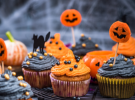
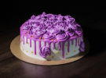
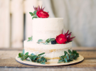
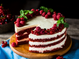

Bolinhos do Halloween

Pequenos bolinhos temáticos e divertidos, decorados com fantasmas, abóboras e outros detalhes assustadoramente doces. Feitos para tornar a celebração do Halloween ainda mais deliciosa e criativa!
Bolo de Flores de casamento

Um bolo elegante e delicado, decorado com flores naturais ou comestíveis que trazem um toque romântico e encantador para o grande dia. Perfeito para casais que buscam sofisticação e beleza em cada detalhe.
Bolo de Casamento

Um clássico para o grande dia, com camadas perfeitas de massa macia e recheio aveludado, finalizado com uma decoração personalizada para combinar com o estilo dos noivos e tornar o momento ainda mais inesquecível.
Frutas Romanticas

Um bolo delicado e encantador, feito com frutas vermelhas frescas que simbolizam amor e paixão. Ideal para um momento a dois, trazendo um sabor doce e marcante ao Dia dos Namorados.